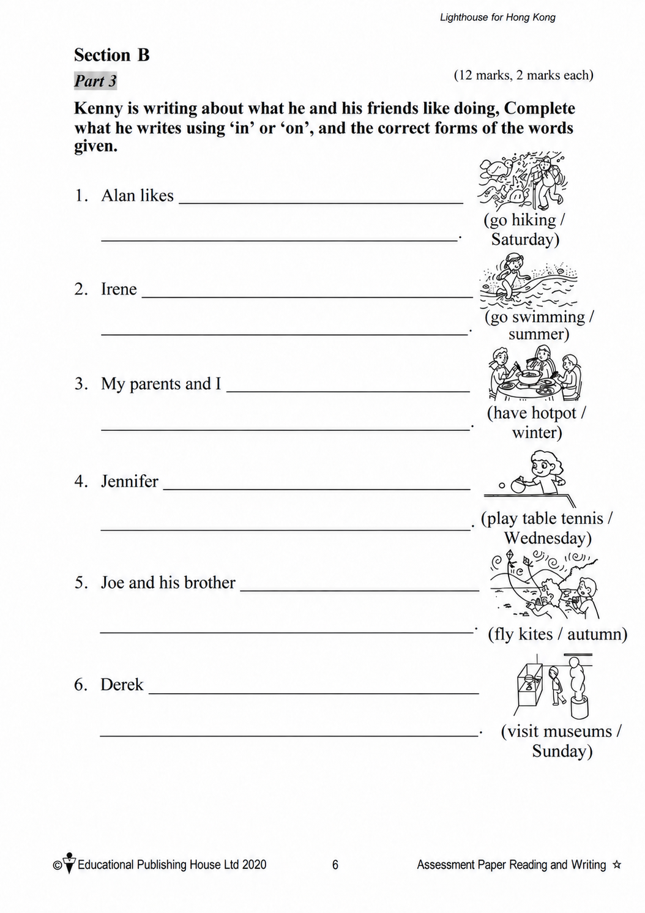
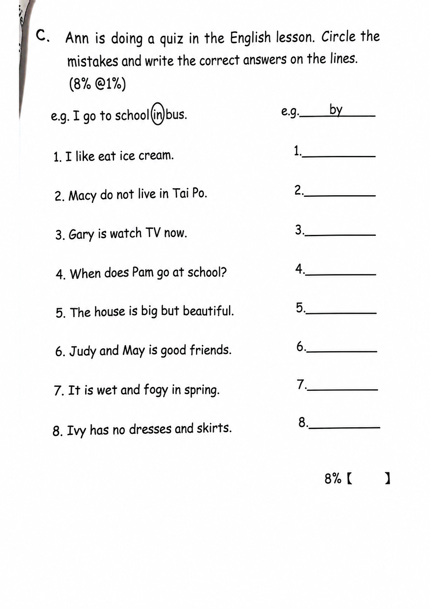

已掌握
| # | 中文意思 | 例句/提示 | 英文默写 | 已掌握 |
|---|---|---|---|---|
| noun 名词 | ||||
| 1 | 生日 | My is in May. | ||
| 2 | 标志 | Read the carefully. | ||
| 3 | 章节 | This is about animals. | ||
| 4 | 页码 | Please open your book to this . | ||
| 5 | 斑马 | The has black and white stripes. | ||
| 6 | 周五 | The school trip is on . | ||
| 7 | 活动 | This is fun. | ||
| 8 | 早餐 | I eat at seven. | ||
| 9 | 信息 | This book gives us useful . | ||
| 10 | 声音 | I heard a strange outside. | ||
| phrase 短语 | ||||
| 11 | 摆餐具 | I before dinner. | ||
| 12 | 留在家里 | We on rainy days. | ||
| 13 | 照顾 | I my little sister. | ||
| 14 | 晾衣服 | We on the washing line. | ||
| adjective 形容词 | ||||
| 15 | 感到无聊的 | I feel on rainy days. | ||
| 16 | 聪明的 | She is and kind. | ||
| adjective/adverb 形容词/副词 | ||||
| 17 | 早的；早地 | I get up . | ||
| pronoun 代词 | ||||
| 18 | 他们 | are my friends. | ||
| verb phrase 动词短语 | ||||
| 19 | 去徒步 | We on Sunday. | ||
| verb 动词 | ||||
| 20 | 理解 | I the question. | ||
| # | 单词/词组 | 中文意思 | 例句/说明 | 已掌握 |
|---|---|---|---|---|
| adjective 形容词 | ||||
| 1 | correct | This answer is correct. | ||
| 2 | wrong | The answer is wrong. | ||
| 3 | hard-working | They are hard-working. | ||
| noun 名词 | ||||
| 4 | pronoun | "He" is a pronoun. | ||
| 5 | grammar | We are learning English grammar. | ||
| 6 | boxing | Boxing is a sport. | ||
| 7 | mushroom | A mushroom is a kind of food. | ||
| 8 | crocodile | The crocodile is in the river. | ||
| 9 | washing | The washing is dry now. | ||
| 10 | shelf | Put the book on the shelf. The shop has a shelf for snacks. | ||
| 11 | signature | Please write your signature at the bottom of the form. | ||
| 12 | clue | This clue helps me. | ||
| 13 | relay race | Let's join the 4x100m relay race together. | ||
| 14 | air conditioner | We turn on the air conditioner when the room is very hot. | ||
| 15 | chemical | The science teacher keeps the chemicals in a locked cupboard. | ||
| 16 | peach | I ate a juicy peach after lunch. | ||
| 17 | mango | This mango is sweet and juicy. | ||
| noun phrase 名词短语 | ||||
| 18 | theme park | She went to a theme park. | ||
| verb 动词 | ||||
| 19 | arrive | I arrive at school on time. | ||
| 20 | weigh | We weigh the bag. The bag weighs two kilograms. | ||
| 21 | chase | The dog may chase the ball. | ||
| 22 | roll | The ball can roll. | ||
| preposition 介词 | ||||
| 23 | opposite | The library is opposite the school. | ||
| verb phrase 动词短语 | ||||
| 24 | pick fruit | We pick fruit in the fruit fields. | ||
| 25 | look at the moon | We look at the moon at night. | ||
| 26 | have a birthday party | I want to have a birthday party at home. | ||
| 27 | make the bed | I can make the bed. | ||
| 28 | get a pet | Think carefully before you get a pet. | ||
| interrogative pronoun 疑问代词 | ||||
| 29 | who | Who gives the dog a bath every week? | ||
| adverbial phrase 副词短语 | ||||
| 30 | per day | Our dog goes for two walks per day. | ||
| # | 中文意思 | 例句/提示 | 英文默写 | 已掌握 |
|---|---|---|---|---|
| time/date 时间日期 | ||||
| 1 | 一月 | is the first month. | ||
| 2 | 二月 | is the second month. | ||
| 3 | 四月 | is the fourth month. | ||
| 4 | 九月 | is the ninth month. | ||
| 5 | 十二月 | is the twelfth month. | ||
| 6 | 星期三 | is a weekday. | ||
| 7 | 星期四 | is a weekday. | ||
| time unit 时间单位 | ||||
| 8 | 月 | A has many days. | ||
| numbers 数字 | ||||
| 9 | 4 | is 4. | ||
| 10 | 6 | is 6. | ||
| 11 | 16 | is 16. | ||
| 12 | 40 | is 40. | ||
| 13 | 80 | is 80. | ||
| solid shape 立体图形 | ||||
| 14 | 圆锥 | A has one curved face. | ||
| geometry 几何 | ||||
| 15 | 锐角 | An is smaller than a right angle. | ||
| # | 单词/词组 | 中文意思 | 例句/说明 | 已掌握 |
|---|---|---|---|---|
| numbers 数字 | ||||
| 1 | approximate value | The approximate value of 198 to the nearest ten is 200. | ||
| operations 运算 | ||||
| 2 | total | Find the total number of apples. | ||
| 3 | carrying | Carrying helps when the ones make ten. | ||
| geometry 几何 | ||||
| 4 | right angle | A right angle is 90 degrees. | ||
| 5 | obtuse angle | An obtuse angle is greater than 90 degrees and less than 180 degrees. | ||
| 6 | identical | These two triangles are identical in shape and size. | ||
| 7 | parallel to each other | The two lines are parallel to each other. | ||
| directions 方向 | ||||
| 8 | direction | Direction tells us where to go. | ||
| question word 题目词 | ||||
| 9 | estimate | Estimate the answer first. | ||
| 10 | count | Count from 1 to 10. | ||
| 11 | respectively | Tom and Ben have 2 and 3 books respectively. | ||
| comparison 比较 | ||||
| 12 | lighter | A pencil is lighter than a brick. | ||
| 13 | lightest | The 1 kg bag is the lightest of the 1 kg, 2 kg and 3 kg bags. | ||
| 14 | heaviest | The 3 kg bag is the heaviest of the 1 kg, 2 kg and 3 kg bags. | ||
| position 位置 | ||||
| 15 | front | The door is at the front of the room. | ||
| operations calculation 运算 | ||||
| 16 | A times B | A times B means multiplication. | ||
| 17 | multiplication | Multiplication can use times. | ||
| 18 | product | The product is the answer in multiplication. | ||
| 19 | expression | Write the expression in horizontal form. | ||
| 20 | remainder | The remainder is left after division. | ||
| teacher math vocabulary 老师数学词汇 | ||||
| 21 | between ... and ... | 7 is between 6 and 8. | ||
| 22 | stop | Stop counting when you reach twenty. | ||
| measurement 测量 | ||||
| 23 | height | Measure the height of the box. | ||
| 24 | kilogram | One kilogram is 1,000 grams. | ||
| 句型结构 | ||||
| 25 | Angle ... is larger than Angle ... | Angle A is larger than Angle B. | ||
| 26 | Angle ... is the largest. | Angle A is the largest. | ||
| 27 | The lines are perpendicular to each other. | The lines are perpendicular to each other. | ||
| 28 | ... is to the east of ... | The school is to the east of the park. | ||
| 29 | ... is to the west of ... | The bank is to the west of the school. | ||
| 30 | ... is to the north of ... | The playground is to the north of the hall. | ||

